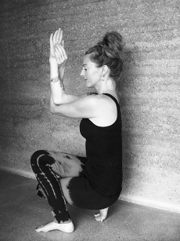
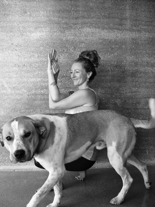
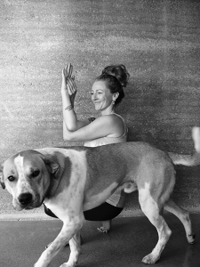

 

email : hello@yogawithjaymin.co.nz
mobile : (0064) 027 292 0193

The Yoga With Jaymin facebook page has the latest information on classes and workshops, as well as
occasional links to articles and sites of interest to Shadow Yogis.
links to further information:
Shadow Yoga : Shandor Remete, the founder of Shadow Yoga.
We'ar clothing : inspiring eco and ethical yoga clothing with a soul and a conscience.
Myescape : Women's clothes and accessories with fab yoga gear.
website designed by BVW Design